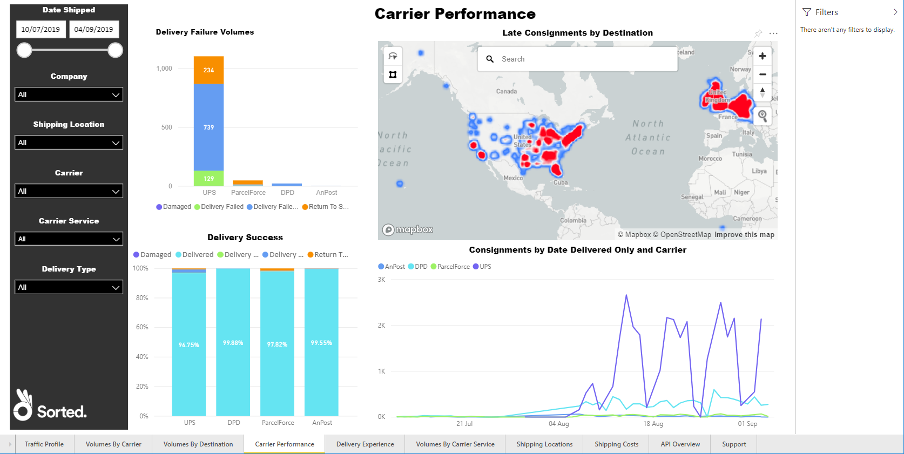
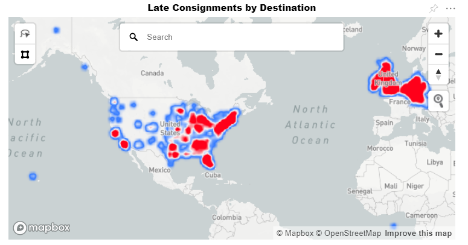
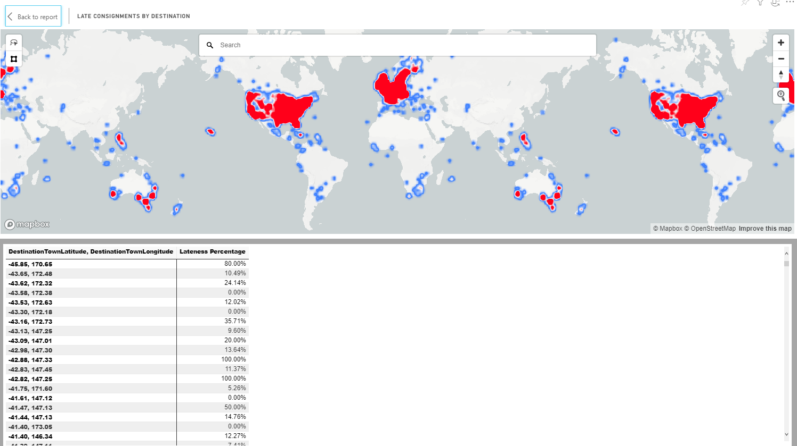
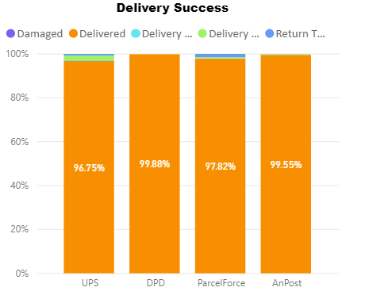
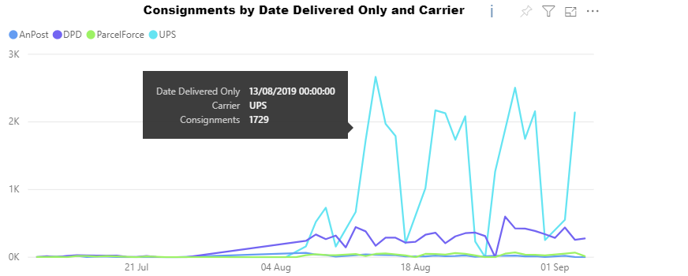

Carrier Performance
The Carrier Performance report enables you to get an overview of your delivery failure rates and late consignments.
It comprises a Delivery Failure Volumes chart, a Late Consignments by Destination map, a Delivery Success chart, and a Consignments by Date Delivered Only and Carrier line graph.
Report Filters
The Carrier Performance report offers the following report-wide filters:
- Consignments Created - enables you to select consignments that were created within a given date range.
- Company Name - where applicable, enables you to select consignments that were created by a particular company within your group. You can select multiple companies if required.
- Shipping Location - where applicable, enables you to select consignments that were created with a particular shipping location.
- Carrier - enables you to select consignments that were allocated to a particular carrier.
- Carrier Service - enables you to select consignments that were allocated to a particular carrier service.
- Delivery Type - enables you to select consignments that were created with a particular delivery type (i.e. Delivery or Click and Collect).
Delivery Failure Volumes
The Delivery Failure Volumes chart shows the total number of failed consignments (that is, those consignments in a state of Damaged, Delivery Failed, Delivery Failed Card Left, and Return To Sender) for each carrier.

Visual Filters
More Options
The Delivery Failure Volumes chart has the following options available from its More Options menu:
- Open Comments
- Export Data
- Show Data
- Spotlight
- Sort Descending
- Sort Ascending
- Sort by Carrier / Consignments
Viewing Data

Late Consignments by Destination
The Late Consignments by Destination visual shows the destinations of your late consignments, plotted on a map. Locations where late consignments occur more frequently are displayed in red.
If required, you can search for countries and locations using the search bar at the top of the panel.
Visual Filters
- Count of ConsignmentReference (Numerical)
- DestinationTownLatitude (Basic and Advanced)
- DestinationTownLongitude (Basic and Advanced)
More Options
The Late Consignments by Destination chart has the following options available from its More Options menu:
Viewing Data
Delivery Success
The Delivery Success chart shows the proportion of your consignments that assumed each of the following states:
- Delivered
- Damaged
- Delivery Failed
- Delivery Failed Card Left
- Return To Sender
This information is broken down by carrier.
Hover your mouse pointer over the chart to view the total number of that carrier's consignments that assumed the selected state.

Visual Filters
More Options
The Delivery Success chart has the following options available from its More Options menu:
- Open Comments
- Export Data
- Show Data
- Spotlight
- Sort Descending
- Sort Ascending
- Sort by Carrier / Consignments
Viewing Data

Consignments by Date Delivered Only and Carrier
The Consignments by Date Delivered Only and Carrier chart shows how many consignments were delivered per day by each carrier over time.

Hover your mouse pointer over a particular point in the chart to view how many consignments that particular carrier delivered on that date.
Visual Filters
- Carrier (Basic and Advanced)
- Consignments (Numerical)
- Date Delivered Only (Basic, Advanced, and Relative Date)
More Options
The Consignments by Date Delivered Only and Carrier chart has the following options available from its More Options menu:
Viewing Data